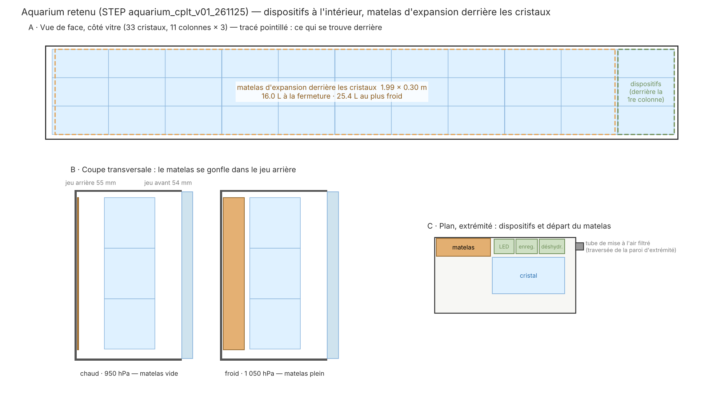

Mise à jour du 9 novembre avec le dessin retenu (STEP du 25 novembre) et tous les dispositifs à l'intérieur. Deux conclusions. Adossée à 215 kg de cristal et à la pierre, la vitre reste 1,5 à 2,5 °C au-dessus du point de rosée la nuit : la masse est notre alliée. Et la vitrine respire par un matelas d'expansion interne de 30 L nominaux, qui empêche l'air marin d'entrer par les joints.
1. Rappel : pourquoi la chaise en métal est mouillée le matin
Par nuit claire, toute surface rayonne sa chaleur vers le ciel. Une chaise en métal n'a presque pas de masse : elle descend 2 à 3 °C sous l'air, passe sous le point de rosée, et l'humidité se dépose dessus. Le banc de pierre à côté reste sec : il restitue toute la nuit la chaleur emmagasinée le jour. Nos cristaux sont le banc de pierre.
2. Avec et sans cristaux derrière la vitre
Sans masse (vitre devant une lame d'air, feuille extérieure d'un double vitrage) : la vitre rayonne vers le ciel et descend sous l'air. Pour un air à 9,5 °C et une rosée à 8,5 °C, elle est à 8 °C : buée. En double vitrage, 4 à 8 h de rosée par nuit claire.
Collée pleine face aux cristaux : la masse recharge la vitre plus vite que le ciel ne la refroidit. Même cas : 11,5 °C, donc sèche, avec +1,5 à +2,5 °C de marge.
Les cas où la vitre perlera quand même
- Après plusieurs jours froids, une journée grise et humide venue de la mer : la masse est en retard sur la météo. Buée 3 à 4 h autour de midi le premier jour, 1 à 2 h le deuxième ; une dizaine d'épisodes par an.
- Brouillard de mer : tout est mouillé, quelle que soit la vitre.
- Un film chauffant transparent de 40 W, piloté par un capteur de point de rosée, traite les redoux ; il faut prévoir un passage de câble.
3. Équilibrage de pression : le matelas d'expansion interne
La zone libre de la vitrine, mesurée sur le STEP, fait 86,8 L ; avec 2 L de dispositifs, il reste 84,8 L pour le gaz sec et le matelas. Entre le plus chaud et bas (+60 °C, 950 hPa) et le plus froid et haut (−15 °C, 1 050 hPa), le gaz sec change de 37 % de son volume, soit 31 L. Un sac plat, mou, en film barrière à feuille d'aluminium, relié à l'extérieur par un évent filtré, absorbe cette variation à pression constante.
| État | Gaz sec | Matelas |
|---|---|---|
| +60 °C, 950 hPa (gaz dilaté de 23,3 %) | 84,8 L | 0 L, à plat |
| Fermeture : 15 °C, 1 013 hPa | 68,8 L | 16,0 L |
| −15 °C, 1 050 hPa (gaz contracté de 13,6 %) | 59,4 L | 25,4 L |
On retient 30 L nominaux (un sac de 1,99 × 0,30 m, ou deux de 15 L), couchés dans le jeu arrière derrière les cristaux : 27 mm d'épaisseur à la fermeture, 42 mm au maximum, pour 55 mm disponibles. Dispositifs (déshydratant, enregistreur, LED, évent) derrière la première colonne.

LV-AQ-EQ-03 · dessin tiré du STEP ; matelas et dispositifs ajoutés schématiquement.
Points à trancher
- Cristaux centrés en profondeur dans le STEP (55 mm derrière, 53,5 mm devant), alors que la rosée suppose le collage plein face contre la vitre. Le volume libre ne change pas s'ils sont poussés contre le verre.
- Volume réel des dispositifs (2 L supposés) et température maximale du gaz (+60 °C supposés) à confirmer au montage à blanc.
- Dessin LV-AQ-PL-04 à refaire : il montre encore une vessie d'environ 1 L et une chambre de visite extérieure.
Les équations, pas à pas et expliquées, sont sur la page technique complète, avec les scripts de calcul et le STEP.
Pierre — 25 novembre 2026. Remplace la note du 9 novembre. Modèle de rosée horaire simplifié : lire « fréquent » ou « rare » plutôt que « jamais ».